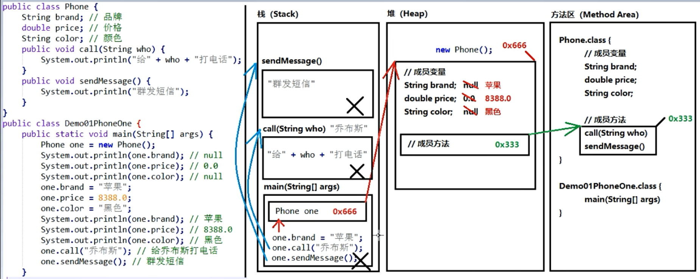

一、类
- 类：是一组相关属性和行为的集合
- 属性： 就是该事物的状态信息
- 行为：就是该事物能够做什么
一、面向对象
1.成员变量是直接定义在类当中的，在方法外边
修饰符 数据类型 变量名；
2.成员方法不要写static关键字
修饰符 返回值类型 方法名（参数列表）{}
3.创建对象的三个步骤
1）导包：也就是支出需要使用的类，在什么位置
import 包名称.类名称
import 包名称.*----------导入该包 的所有类
import cn.itcast.day06.demo01.Student;
对于和当前类属于同一个包的情况，可以省略导包语句不写
2）创建：格式：
类名称 对象名 = new 类名称();
Student stu = new Student();
3)使用，分为两种情况
使用成员变量：对象名.成员变量名
使用成员方法：对象名.成员方法名(参数)
注意事项：如果成员变量没有进行赋值，那么将会有一个默认值，规则和数组一样
4.对象作为参数传递时，传递到方法当中时，实际上传递的是对象的地址值
5.当使用一个对象类型作为方法的返回值时：返回值其实就是对象的地址值
对象在内存中存储

两个变量指向同一个对象
对象作为参数
对象作为返回值
二、局部变量和成员变量的区别
1.定义的位置不一样
局部变量：在方法内部定义
成员变量：在方法外部定义，直接写在类当中
2.作用范围不一样
局部变量：只有方法当中才可以使用，出了方法就不能再用
成员变量：整个类全都可以通用
3.默认值不一样
局部变量：没有默认值，如果想要使用，必须手动进行赋值
成员变量：如果没有赋值，会有默认值，规则和数组一样
4.内存的位置不一样
局部变量：位于栈内存
成员变量：位于堆内存
5.生命周期不一样
局部变量：随着方法进栈诞生，随着方法出栈而消失
成员变量：随着对象创建而诞生，随着对象被垃圾回收消失
注意：方法的 参数就是局部变量，参数在方法调用的时候，必然会被赋值的
三、封装性
1.方法就是一种封装
2.关键字private也是一种封装：用private关键字将需要保护的成员变量进行保护
一旦使用了private进行修饰，那么本类当中仍然可以随意访问，但是，超出了本类范围之外就不能再直接访问
间接访问private修饰的变量的方式：设置Setter/Getter方法，即在类中定义方法访问private修饰的变量
必须命名为setXxx或者是getXxx命名规则
对于Getter来说，不能有参数，返回这类型和成员变量对应
对于Setter来说，不能有返回值，参数类型和成员变量对应
注意：对于基本类型当中的boolean值，Getter方法一定要写成isXxx的形式，而Setter方法不变
如果局部变量和成员变量名字一样，则在setter和getter时要给变量加this关键字
3.this关键字
当方法的局部变量和类的成员变量重名的时候，根据就近原则，优先使用局部变量，如果需要访问本类当中的成员变量，需要使用格式：this.成员变量名
“通过谁调用的方法，谁就是this”
作用：区分同名的成员变量和局部变量
4.构造方法
格式：
修饰符 类名称(参数类型 参数名称){
方法体
}
注意事项：
1）构造方法的名称必须和所在的类名称完全一样，就连大小写也要一样
2）构造方法不用写返回值类型，连void也不写
3）构造方法不能return一个具体返回值
4）如果没有编写任何构造方法，那么编译器将会默认赠送一个构造方法，没有参数，方法体什么也不做
5）一旦编写了至少一个构造方法，那么编译器将不再赠送
6）构造方法也是可以重载的
四、一个标准的类(Java Bean)
1.所有的成员变量都要使用private关键字修饰
2.为每一个成员白能量编写一对Getter/Setter方法
3.编写一个无参的构造方法
4.编写一个全参的构造方法
五、继承(extends)
- 概念：共性抽取
- 继承关系当中的特点：
- 子类可以拥有父类的“内容”
- 子类还可以拥有自己专有的内容
- 在继承的关系中，“子类就是一个父类”，也就是说，子类可以被当做父类看待
- 定义父类的格式：（一个普通的类定义）
public class 父类名称{
//..
}
5.定义子类的格式：
public class 子类名称 extends 父类名称{
//...
}
6.继承中成员变量的访问方法
在父子类的继承关系当中，如果成员变量重名，则创建子类对象时，有两种方式
- 直接通过子类对象访问成员变量：等号左边是谁，就优先用谁，没有则向上找
- 间接通过成员方法访问成员变量：该方法属于谁，就优先用谁，没有则向上找
在父子类的继承关系中，如果局部变量，本类的成员变量和父类的成员变量重名规则
- 局部变量：直接写局部变量名
- 本类的成员变量：this.成员变量名
- 父类的成员变量：super.成员变量名
在父类的继承关系当中，创建子类对象，访问成员方法的规则
- 创建对象是谁，就优先用谁，如果没有则向上找。
- 注意事项：无论是成员方法还是成员变量，如果没有都是向上找父类
7.方法的重写（override）
- 在继承关系当中，方法的名称一样，参数列表也一样
注意事项：
- @Override:写在方法前面，用来检测是不是有效的正确覆盖重写（可选）
- 子类方法的返回值必须小于等于父类方法的返回值范围 （这里的小于等于指的是继承的概念，子类的返回值是父类返回值的子类）
java.long.Object是所有类的顶级类
3. 子类方法的权限必须大于等于父类方法的权限修饰符
public > protected > (default) > private
备注：(default)不是关键字default，而是什么都不写，留空
4. 私有的方法不能被继承，也不能被覆盖重写
8. 设计原则：
对于已经投入使用的类，尽量不要进行修改。推荐定义一个新的类，来重复利用其中共性内容，并且添加改动新内容
9. 父子类构造方法的访问特点
- 子类构造方法当中有一个默认隐含的"super()"调用父类无参构造方法，所以一定先执行的父类构造，后执行的子类构造
- 子类构造可以通过super关键字来调用父类重载构造：super(参数列表);
- super的父类构造调用，必须是子类构造方法的第一个语句，不能一个子类构造调用多次super构造
总结：子类必须调用父类构造方法，不写则赠送super()；写了则用写的指定的super调用，super只能有一个，还必须是第一个
10. super关键字的用法有三种
- 在子类的成员方法中，访问父类的成员变量
- 在子类的成员方法中，访问父类的成员方法
- 在子类的构造方法中，访问父类的构造方法
- 在子类的普通方法中，不能通过super关键字调用父类构造方法
- this关键字
- 在本类的成员方法中，访问本类的成员方法
- 在本类的成员方法中，访问本类的另一个成员方法
- 在本类的构造方法中，访问本类的另一个构造方法
注意：
1. 在第三种用法中this(...)调用也必须是构造方法的第一个语句，也是唯一一个
2. super和this两种构造的调用不能同时使用，因为super和this都是唯一的
3. super和this关键字图解

12. Java继承的特点
1. 一个类的直接父类只能有唯一一个
2. Java语言可以多级继承，最顶级的类是java.lang.Object
3. 一个子类的直接父类是唯一的，但是一个父类可以有多个子类

六、抽象（如果父类当中不确定{}方法体如何实现，那么这就是一个抽象方法）
- 抽象方法：就是加上abstract关键字，然后去掉大括号，直接用分号结束
2. 抽象类：抽象方法所在的类必须是抽象类才行，在class之前加上abstract就行，抽象类中可以有构造方法
3. 如何使用抽象类和抽象方法
- 不能直接创建new抽象类对象
- 必须有子类继承抽象父类
- 子类必须覆盖重写抽象父类当中所有的抽象方法
- 覆盖重写（实现）：子类去掉抽象方法的abstract关键字，然后补上方法体大括号
- 创建子类对象进行使用
注意事项：
- 抽象类不能创建对象，如果创建，编译无法通过而报错，只能创建其非抽象子类的对象
- 是供子类创建对象时，初始化父类成员使用的。
- 抽象类中，不一定包含抽象方法，但是有抽象方法的类必须是抽象类。没有抽象方法的抽象类，也是不能直接创建对象
- 抽象类的子类，必须重写抽象父类中所有的抽象方法，否则编译报错。除非该子类也是抽象类
七、接口
- 概念：接口就是多个类的公共规范。接口是一种引用数据类型，最重要的内容就是其中的抽象方法
- 定义方法：
public interface 接口名称{
//接口内容
}
备注：换成了关键字interface之后，编译生成的字节码文件仍然是.java-->.class
3. 接口内可以存放的内容
- Java7，可以包含的内容有
- 常量
接口当中也可以定义“成员变量”，但是必须使用public static final三个关键字进行修饰，从效果上看，这其实就是接口的【常量】，一旦赋值不可修改
public static final 数据类型 常量名称 = 数据值
备注：一旦使用final关键字进行修饰，说明不可改变
注意： 1.接口当中的常量，可以省略public static final,注意，不写也照样是这样
2. 接口当中的常量，必须进行赋值，不能不赋值
3. 接口中常量的名称，使用时完全大写
2. 抽象方法
public abstract void 方法名称();
注意事项：
1. 接口中的抽象方法，修饰符必须是两个固定的关键字：public abstract
2. 这两个关键字修饰符，可以选择性的进行省略任意一个或两个都省略
3. 方法的三要素可以随意定义
2. Java8，还可以包含
- 默认方法
public default 返回值类型 方法名称(参数列表){
方法体
}
备注：接口当中的默认方法，可以解决接口升级的问题，默认方法就是用来被实现类继承的
1.接口的默认方法，可以通过接口实现类对象直接调用
2.接口的默认方法，也可以被接口实现类进行覆盖重写，重写的时候不要加default
2. 静态方法
public static 返回值类型 方法名称(参数列表){
方法体
}
提示：就是将abstract或者default换成static即可，带上方法体
注意：不能通过接口实现类的对象来调用接口当中的静态方法
可以通过接口名称.直接调用其中的静态方法
格式：接口名称.静态方法（参数）
- 私有方法
3. Java9，还可以包含
1.普通私有方法，解决多个默认方法之间重复代码问题
格式：
private 返回值类型 方法名称(参数列表){
方法体
}
私有方法只能在接口中默认方法内调用
2.静态私有方法，解决多个静态方法之间重复代码问题
格式：
private static 返回值类型 方法名称(参数列表){
方法体
}
静态私有方法在接口中的静态方法内调用也可以在默认方法内调用
4.注意事项：
- 接口中的抽象方法，修饰符必须是两个固定的关键字：public abstract
- 这两个关键字修饰符，可以选择性的进行省略任意一个或两个都省略
- 方法的三要素可以随意定义
5.接口使用步骤：
- 接口不能直接使用，必须有一个“实现类”来实现该接口，格式为：
public class 实现类名称 implements 接口名称{
//...
}
2. 接口的实现类必须覆盖重写，加上方法体大括号
实现：去掉abstract关键字，加上方法体大括号
3.创建实现类的对象，进行使用
4.注意事项：
如果实现类并没有覆盖重写接口中的所有的抽象方法，那么这个类就必须是一个抽象类
6.总结
- 成员变量其实是常量
- 接口是没有静态代码块或者构造方法的
- 一个类的直接父类是唯一的，但是一个类可以实现多个接口
- 格式：
注意：常量必须进行赋值，而且一旦赋值不能改变。
常量名称完全大写，用下划线进行分割
2. 抽象方法
注意：实现类必须覆盖重写接口所有的抽象方法，除非实现类是抽象类
3. 接口里允许默认方法
注意：默认方法也可以被覆盖重写
4. 静态方法
注意：应该通过接口名称进行调用，不能通过实现类对象调用接口静态方法
5. 允许私有方法
注意：private的方法只有接口自己才能调用，不能被实现类或其它类使用
注意事项：
public class MyInterfaceImpl implements MyInterfaceA,MyInterfaceB{
//覆盖重写所有抽象方法
}
3.如果实现类所实现的多个接口当中，存在重复的抽象方法，那么只需要覆盖重写一次即可
4. 如果实现类没有覆盖重写所有接口当中的抽象方法，那么实现类必须是一个抽象类
5. 如果实现类（无论是否是抽象类）所实现的多个接口当中，存在重复的默认方法，那么实现类一定要给重复的默认方法进行重写
6. 一个类如果直接父类当中的方法，和接口当中的默认方法发生冲突，则优先使用父类中的方法（继承优先于接口实现）
7.规律总结
- 类与类之间是单继承的，直接父类只有一个
- 类与接口之间是多实现的，一个类可以实现多个接口(implements)
- 接口与接口之间是多继承(extends)
注意：
1. 多个父接口当中的抽象方法如果重复，没关系，
2. 多个父接口当中的默认方法如果重复，那么子接口必须进行默认方法的覆盖重写，【而且带着default关键字】
八、多态
1.概念：
extends继承或者implements实现，是多态性的前提，一个对象拥有多种形态，这就是对象的多态性
2.代码当中体现多态性
- 父类引用指向子类对象（左父右子）
- 父类名称 对象名 = new 子类名称()
- 接口名称 对象名 = new 实现类名称()
3.访问成员变量的两种方式
- 直接通过对象名称访问成员变量：看等号左边是谁，就优先用谁，没有则向上找
- 间接通过成员方法访问成员变量：看该方法属于谁，则优先用谁，没有则向上找，如果都有，则优先用子类方法
4.成员方法的访问规则
- 看new的是谁，就优先用谁，没有则向上查找
5.对比成员变量和成员方法
- 成员变量：编译看左边，运行看左边
- 成员方法：编译看左边，运行看右边
6.多态的好处
无论右边new的时候换成哪个子类对象，等号左边调用方法都不会改变
7.对象向上转型（其实就是多态写法）
- 格式：父类名称 对象名 = new 子类名称()
- 含义：右侧创建一个子类对象，把它当做父类来看待使用
- 注意事项：向上转型一定是安全的，从小范围转向了大范围
- 缺点：对象一旦向上转型为父类，那么久无法调用子类特有内容
8.对象向下转型（其实是一个还原的过程）
- 格式：子类名称 对象名 = （子类名称）父类对象；
- 含义：将父类对象，还原成为子类对象
- 注意事项：
- 必须保证对象本来创建的时候，就是A对象，才能向下转型为A
- 如果对象创建的时候本来不是A，向下转型的时候非要转型为A，则会报错
- java.lang.ClassCastExceptioin

九、instanceof关键字
1. 格式：
- 对象 instanceof 类名称，这将会得到一个boolean值结果，也就是判断前面的对象能不能当做后面类型的实例
2.三种方式
- 可以先采用多态写法将对象向上转型，然后再作为参数使用
- 不进行向上转型，将对象作为参数使用，程序会自动向上转型
- 可以采用匿名函数方式传递参数
十、final关键字
1. 概念
final 关键字代表最终、不可改变的
2. 常见四种用法
1. 可以用来修饰一个类
public final class 类名称{
//...
}
含义：当前这个类不能有任何的子类
注意事项：
1. 一个类如果是final的，那么其中的方法不能被覆盖重写
2. 可以用来修饰一个方法
修饰符 final 返回值类型 方法名称(参数列表){
//方法体
}
注意：
1.当final关键字用来修饰一个方法的时候，这个方法就是最终方法，也就是不能被覆盖重写
2. 对于类、方法来说，abstract关键字和final关键字不能同时使用，因为矛盾
3. 可以修饰一个局部变量（一次赋值，终身不变）
- 一旦使用final用来修饰局部变量，那么这个变量就不能进行更改
- 对于基本类型来说，不可变说的是变量当中的数据不可变
- 对于引用类型来说，不可变说的是引用类型当中的地址不可变
4. 可以修饰一个成员变量
- 对于成员变量来说，如果使用final关键字修饰，这个变量照样不可变；
- 由于成员变量具有默认值，所以用了final之后必须手动赋值，不会再给默认值了
- 对于final的成员变量，要么使用直接赋值，要么通过构造方法赋值，二者选其一
- 构造方法赋值要在所有构造方法中对成员变量进行赋值
- 必须保证所有重载的方法，都最终会给final的成员变量进行赋值
十一、四种权限修饰符
1. public > protected > (default) > private
| public | protected | (default) | private | |
同一个类 | YES | YES | YES | YES |
同一个包不同类 | YES | YES | YES | NO |
不同包子类 | YES | YES | NO | NO |
不同包非子类 | YES | NO | NO | NO |
注意事项：（default）并不是关键字“default”，而是根本不写
public只要不跨模块，就能访问
十二、 内部类
1. 成员内部类
修饰符 class 外部类名称{
修饰符 class 内部类名称{
//...
}
//...
}
注意：
内用外，随意访问，外用内，需要借助内部类对象
内部类编译后文件名为：外部类名$内部类名.class
使用方法：
1.间接方式：在外部类的方法当中，使用内部类，然后main只是调用外部类的方法
2.直接方式：
类名称 对象名 = new 类名称()
外部类名称.内部类名称 对象名 = new 外部类名称().new 内部类名称(); //创建了两次对象
- 内部类的同名变量访问
- 如果出现了重名现象，那么格式是：外部类名称.this.外部类成员原变量
2. 局部内部类
- 概念：如果一个类是定义在一个方法内部的，那么这就是一个局部内部类。“局部”:只有当前所属的方法才能使用它，出了这个方法外面就不能用了。
- 定义格式
修饰符 class 外部类名称{
修饰符 返回值类型 外部类方法名称(参数){
class 局部内部类名称{
//...
}
}
}
3. 总结（定义一个类的时候，权限修饰符规则：）
- 外部类：public / (default)
- 成员内部类：public / protected / (default) / private
- 局部内部类： 什么都不能写
- 局部内部类访问成员变量重名问题
- 访问外部类：super.变量名
- 访问方法内，内部类外：this.变量名
- 访问本类直接用
4. 局部内部类的final问题
局部内部类，如果希望访问所在方法的局部变量，那么这个局部变量必须是有效final的
从Java8开始，只要局部变量事实不变，那么final关键字可以省略
原因备注：
- new出来的对象在堆内存当中
- 局部变量是跟着方法走的，在栈内存当中
- 方法运行结束之后，立刻出栈，局部变量就立刻消失
- 但是new出来的对象会在堆当中持续存在，直到垃圾回收消失
3.匿名内部类
- 如果接口的实现类（或者是父类的子类）只需要使用唯一的一次，那么这种情况就可以省略掉该类的定义，而改用匿名内部类。
- 格式
接口名称 对象名 = new 接口名称() {
//覆盖所有抽象方法
};
3. 注意事项
- 对格式进行解析“new 接口名称(){...}”
- new代表创建对象的动作
- 接口名称就是匿名内部类需要实现哪个接口
- {...}这才是匿名内部类的内容
- 注意几点：
- 匿名内部类在创建对象的时候只能使用唯一一次，如果希望多次创建对象，而且类的内容一样的话，那么就必须使用单独定义的实现类了
- 匿名对象，在调用方法的时候，只能调用一次，如果希望同一个对象调用多次方法，那么必须给对象起个名字
- 匿名内部类是省略了实现类/子类名称，但是匿名对象是省略了对象名称（匿名对象和匿名内部类不是一回事）
拓展：
需要明白类的加载顺序。
(1) 父类静态对象和静态代码块
(2) 子类静态对象和静态代码块
(3) 父类非静态对象和非静态代码块
(4) 父类构造函数
(5) 子类 非静态对象和非静态代码块
(6) 子类构造函数
第七天